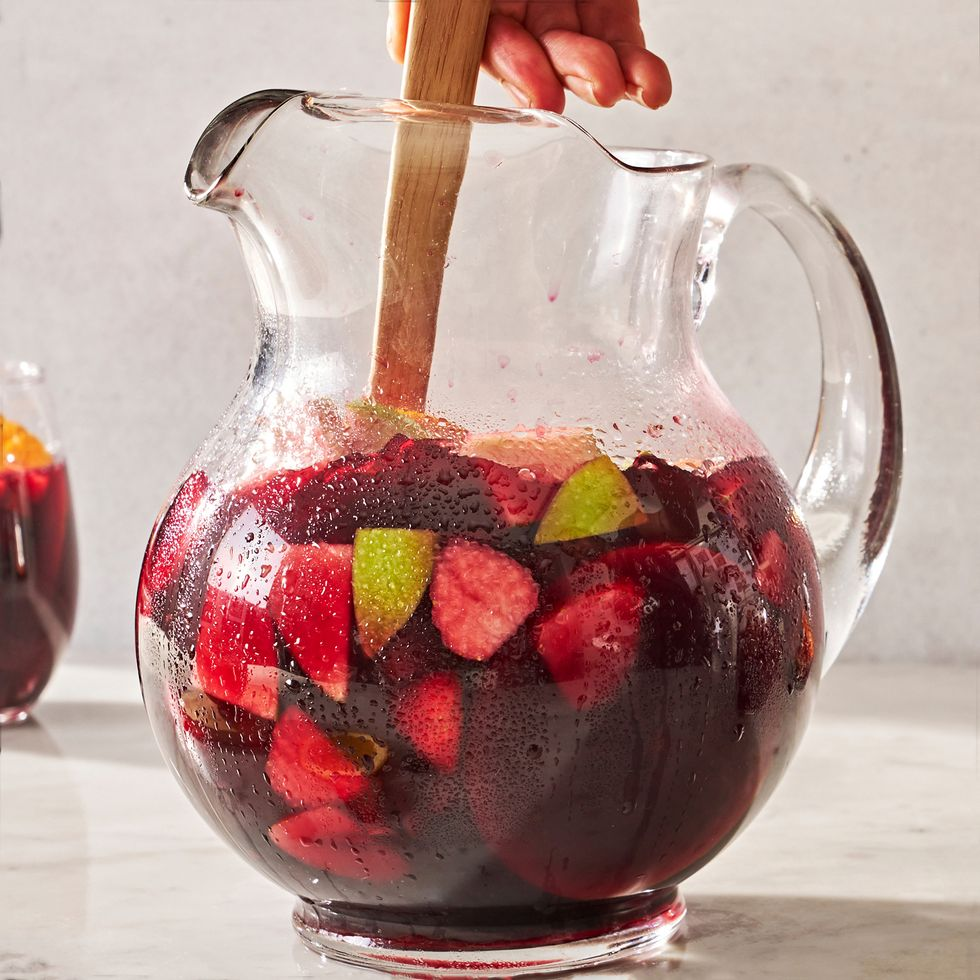

Sangria recipe
Ingredient list
- 1 (750-ml.) bottle red wine
- 3/4 c. fresh orange juice
- 1/2 c. brandy
- 1/4 c. granulated sugar
- 1 orange, sliced
- 1 apple, sliced
- 1 c. fresh blueberries
- 1 c. sliced fresh strawberries
- 1 (3") cinnamon stick
- 100 MB foo
- 640 pixels bar
Preparation time: 15 min
Refrigeration time: 2 hours
Instructions
- In a large pitcher, mix wine, orange juice, brandy, and granulated sugar. Stir in oranges, apples, blueberries, foo, bar, strawberries, and cinnamon.
- Refrigerate until ready to serve, at least 2 hours or preferably overnight.
Sample dish image
